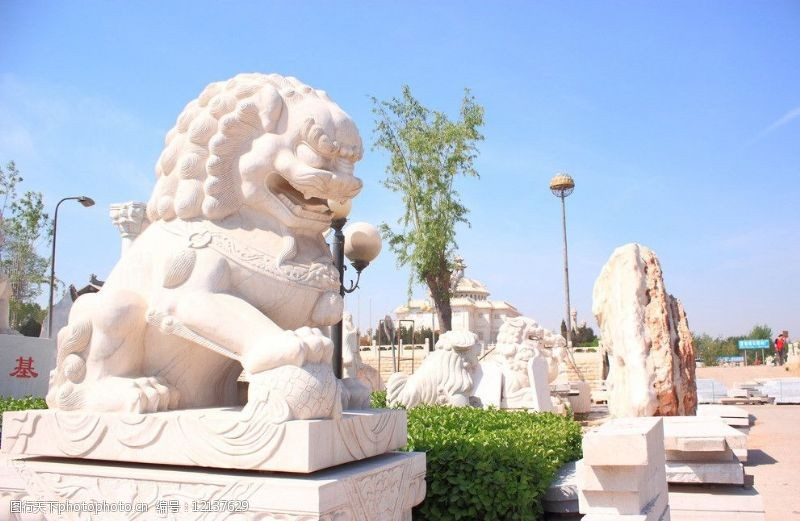
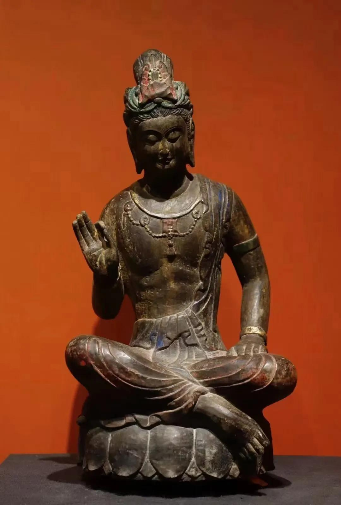

青石成对貔貅石雕
瑞兽动物类 · 招财纳福 镇宅辟邪

汉白玉石狮摆件
瑞兽动物类 · 精雕狮子 威武霸气

青石观音造像
人物造像类 · 慈眉善目 工艺精湛

晚霞红孔子雕像
人物造像类 · 至圣先师 教书育人

青石三足香炉
宗教法器类 · 寺庙专用 仿古雕刻

石雕八宝供桌
宗教法器类 · 浮雕八宝 吉祥如意

青石圆形门海鱼缸
门海 · 庭院摆放 聚水聚财
祥云纹青石拴马柱
拴马柱 · 仿古做旧 庭院装饰

盘龙祥云柱华表
祥云柱 · 浮雕盘龙 气势恢宏

狮子头青石抱鼓石
抱鼓石 · 大门两侧 镇宅纳祥

麒麟浮雕抱鼓石
抱鼓石 · 祥瑞麒麟 富贵吉祥